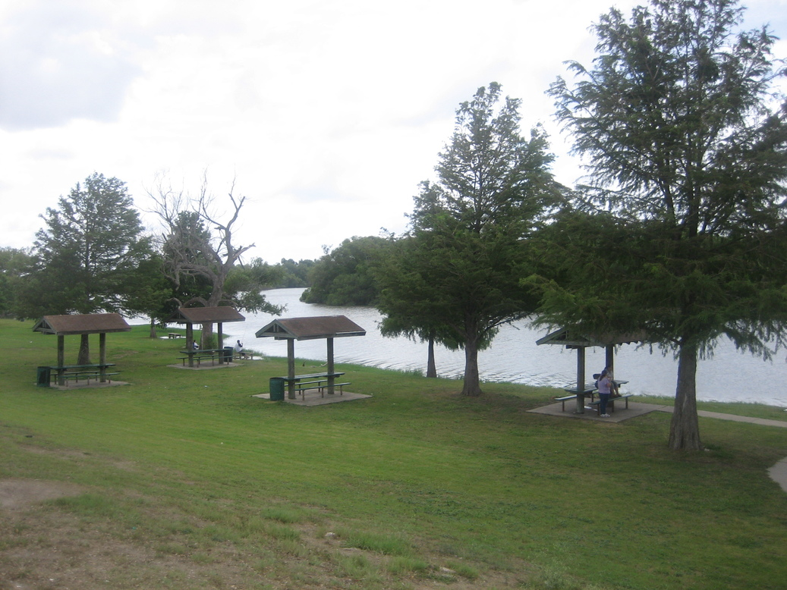
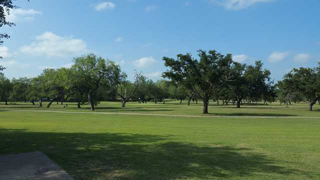
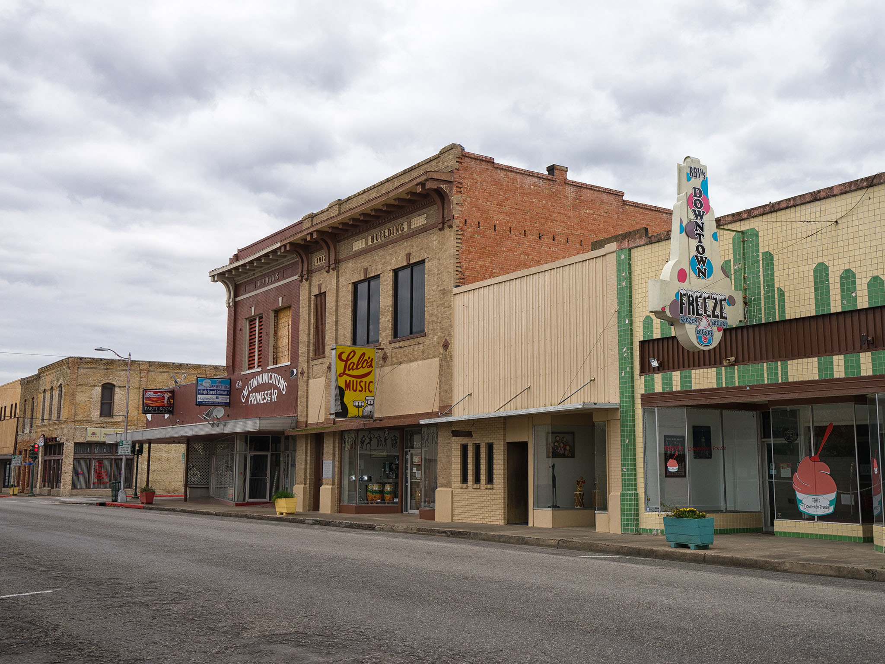

Alice, the county seat of Jim Wells County, is intersected by U.S. Highway 281 and State highways 44 and 359, forty-four miles west of Corpus Christi.
Culture and History
Alice was known for its large cattle industry until the discovery of petroleum beneath and around the town in the 1940s, which caused a slight population boom and a great economic boom. Alice has a big Hispanic population.
Activities
Hunting, fishing, kayaking, birding and more
Alice, TX Population
17,500
Places of Interest in
SOUTH TEXAS MUSEUM
LAKE FINDLEY
CITY OF ALICE MUNICIPAL GOLF COURSE
ALICE FARMER'S MARKET
TEJANO R.O.O.T.S. HALL OF FAME
HISTORIC DOWNTOWN
Events
Cinco De Mayo Festival May 5th
Jim Wells County Fair Parade October
Image Galery
SOUTH TEXAS MUSEUM

LAKE FINDLEY

CITY OF ALICE MUNICIPAL GOLF COURSEALICE FARMER'S MARKETTEJANO R.O.O.T.S. HALL OF FAME

HISTORIC DOWNTOWN